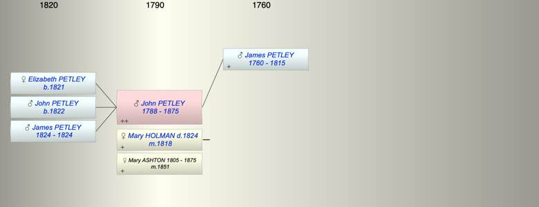

| [Index] |
| John PETLEY (1788 - 1875) |
|  |
| b. 22 Aug 1788 at MInster in Thanet |
| m. (1) 09 Jul 1818 Mary Ann HOLMAN ( - 1824) at St Lawrence, Ramsgate |
| m. (2) 13 Nov 1851 Mary ASHTON (1805 - 1875) at St Laurence |
| d. 14 Jan 1875 at Ramsgate aged 86 |
| Parents: |
| James PETLEY (1760 - 1815) |
| Siblings (4): |
| Ann Cooper PETLEY (1784 - 1847) |
| Mary PETLEY (1787 - 1834) |
| John PETLEY (1788 - 1875) |
| WIlliam PETLEY (1789 - ) |
| Children (3): |
| Elizabeth PETLEY (1821 - ) |
| John PETLEY (1822 - ) |
| James PETLEY (1824 - 1824) |
| Events in John PETLEY (1788 - 1875)'s life | |||||
| Date | Age | Event | Place | Notes | Src |
| 22 Aug 1788 | John PETLEY was born | MInster in Thanet | Note 1 | ||
| 1815 | 27 | Death of father James PETLEY (aged 55) | ex will | ||
| 09 Jul 1818 | 29 | Married Mary Ann HOLMAN | St Lawrence, Ramsgate | Note 2 | |
| 1821 | 33 | Birth of daughter Elizabeth PETLEY | MInster | ex 1851 and 1861 census | |
| 1822 | 34 | Birth of son John PETLEY | Ramsgate | bap St Lawrence 27 Nov 1822 | |
| 1824 | 36 | Birth of son James PETLEY | |||
| 1824 | 36 | Death of son James PETLEY | |||
| 1824 | 36 | Death of wife Mary Ann HOLMAN | Ramsgate | Note 3 | |
| 13 Nov 1851 | 63 | Married Mary ASHTON (aged 46) | St Laurence | Note 4 | |
| 14 Jan 1875 | 86 | John PETLEY died | Ramsgate | Note 5 | |
| Personal Notes: |
|
1871 living Cliffs End, MInster John Petley 82 b Minster with wife Mary 65 b Bolsover, Derbyshire and Elizabeth 50 daughter b Minster,
1861 census Living Cliffs End, MInster John Petley 72 b MInster, his wife Mary 56 b Matlock, Derbyshire and his daughter Elizabeth 40 single b Minster. 1851 living Nelson Crescent, Ramsgate John Petley 63, b MInster widower with his daughter Elizabeth 30 single b MInster. |
| Created on a Mac™ using iFamily for Mac™ on 8 Oct 2023 |